|
Real-Time Monitoring of Distributed Farm
The MonaLisa global Client is using the Jini discovery mechanism to find all the active regional centers and presents a set of global views of the system:
A 3D View of the Regional Centers
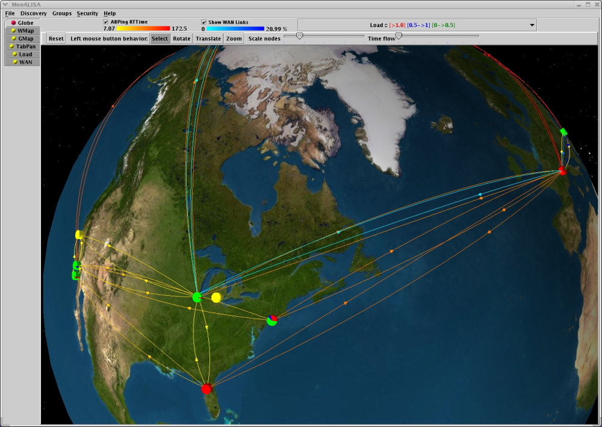
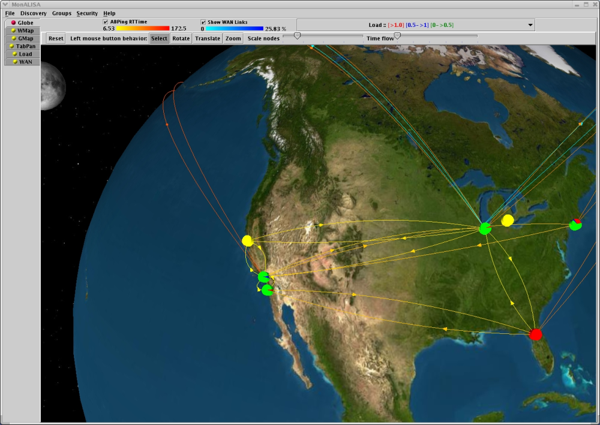
The Real Time WAN Traffic is representd together with the quality of the connectivity (ABPing).
The overall Load or CPU Usage of the farms is also represented.
World Map View
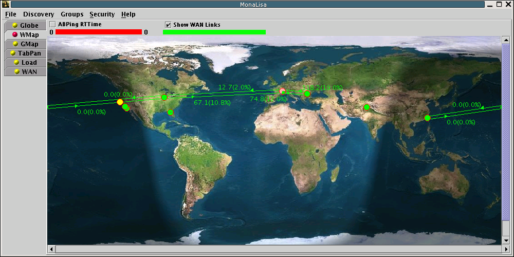
A World Map View of the Regional Centers and the traffic in WAN.
Graph Map View
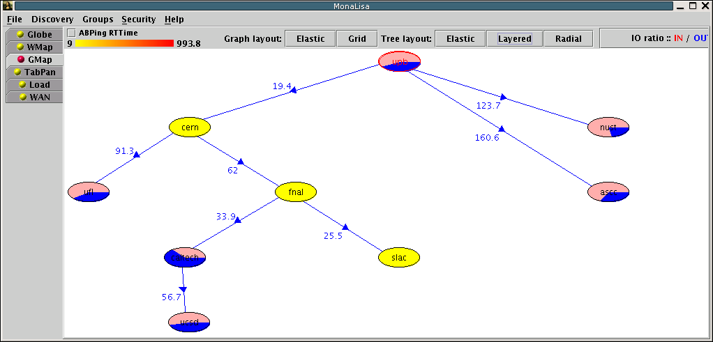
A dinamically computed Minimum Path Tree for data replication.
Table View
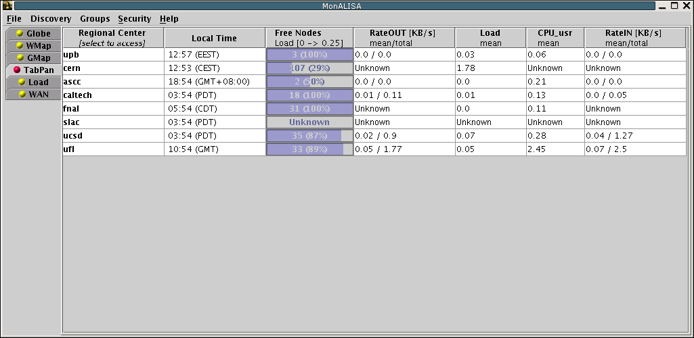
In this view can be seen all the Regional Centers and a dynamic set of global values provided by filters.
Additional filters can be easily loaded to MonaLisa services and than register to the data.
Load View
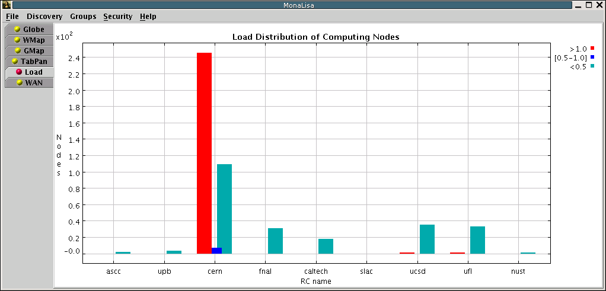
This view shows a distribution of load for the nodes in all the regional centers.
WAN View
This view shows the instant traffic into all the major networks. Values are collected from routers using snmp.
Regional Center properties views
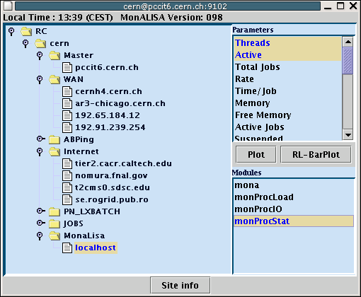
When a Regional Center is selected, its configuration used for monitoring is shown in a new window.
Clusters or individual nodes can be selected to plot the time evaluation.

The Round Trip Time for several centers.
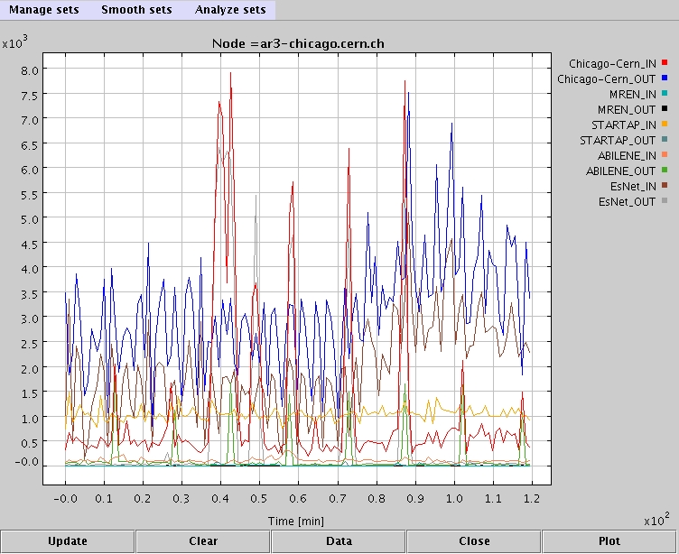
The Traffic from a major router in Chicago.
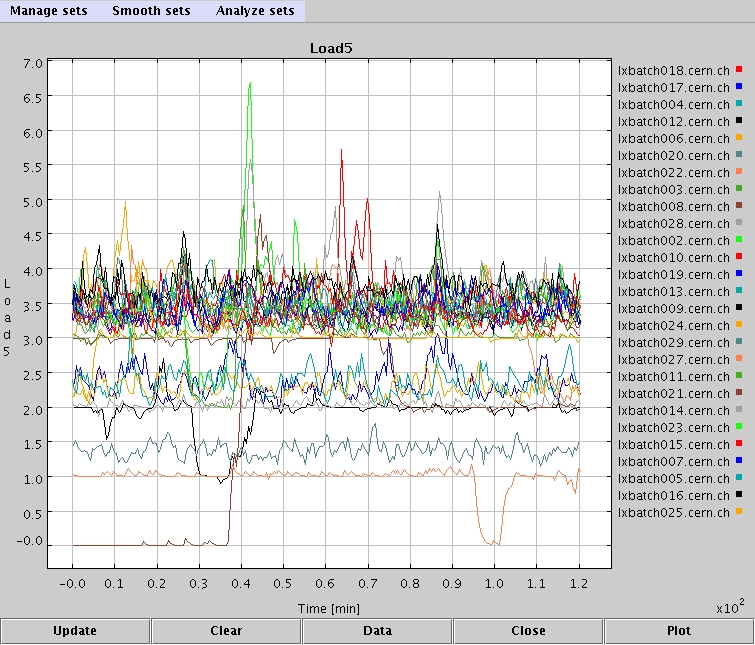
The Load of all the nodes at a farm.
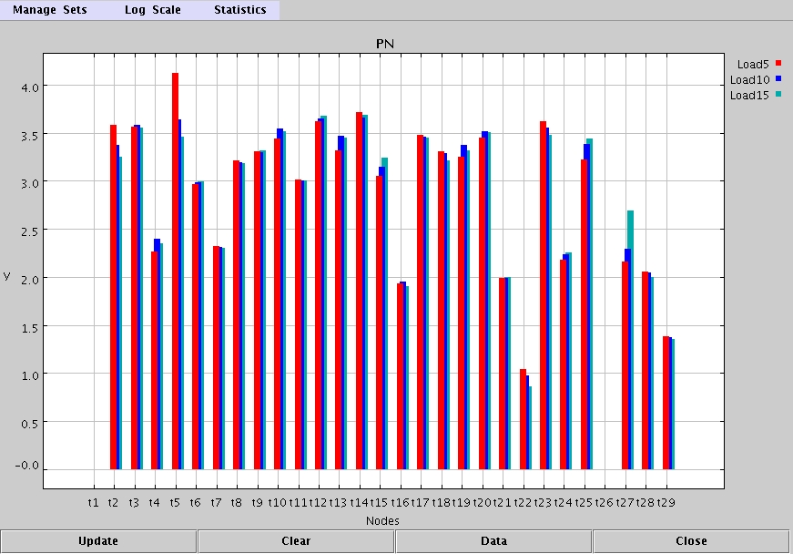
The Current values can also be shown as histograms.
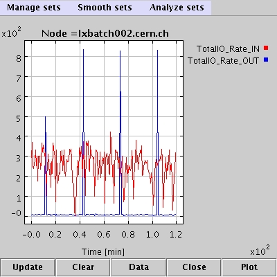
The system allows to access any measured data for each individual node.
|